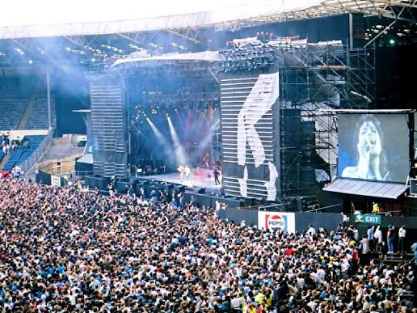
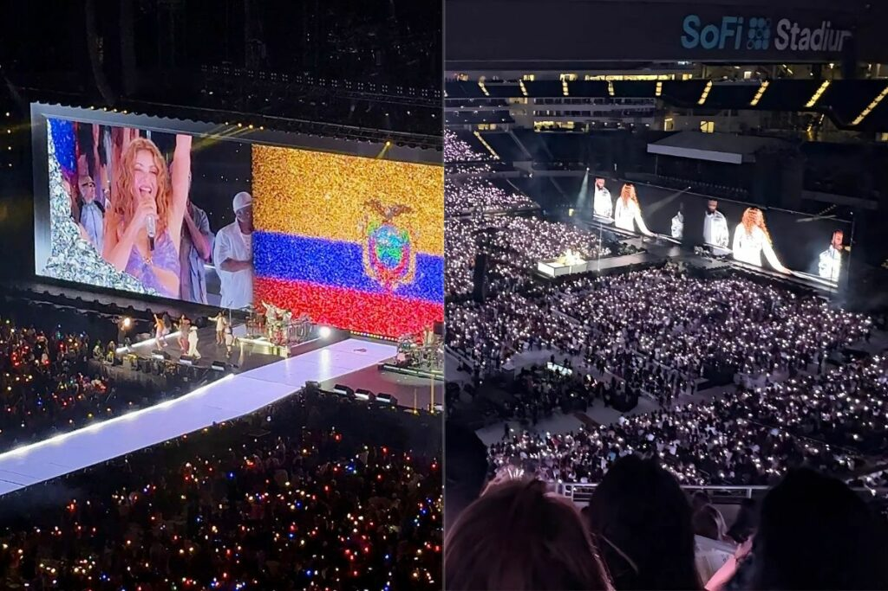
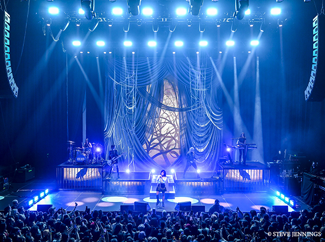

Giras y Shows Destacados
Michael Jackson - Bad World Tour

El Bad World Tour se convirtió en una de las giras más espectaculares de la historia, destacando por sus coreografías milimétricas y efectos visuales innovadores.
Shakira - Las Mujeres Ya No Lloran World Tour

Con su impresionante gira mundial Las Mujeres Ya No Lloran World Tour, Shakira ha vuelto a romper récords de taquilla globales, celebrando sus hits históricos y sus más recientes éxitos de estudio con un show lleno de baile y energía latina.
Demi Lovato - Holy Fvck Tour

En su gira Holy Fvck Tour, Demi demostró toda la fuerza de su voz interpretando temas cargados de guitarras enérgicas y una propuesta escénica de puro pop-rock.